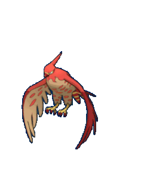
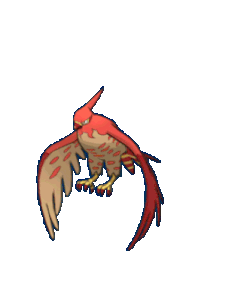
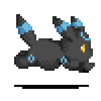
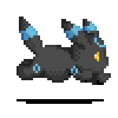

.jpg)

 
pokemon

pokemon
ピカチュウ
イブ


 
 


ℙ𝕠𝕔𝕜𝕖𝕥 𝕄𝕠𝕟𝕤𝕥𝕖𝕣𝕤
AS NEVES DE HISUI
novas descorbetas
as aventutas de pikachu

Pokémon é uma franquia de mídia que pertence a The Pokémon Company, tendo sido criada por Satoshi Tajiri em 1995. Ela é centrada em criaturas ficcionais chamadas "Pokémon", que os seres humanos capturam e os treinam para lutarem entre si com seus ataques de diversos tipos portanto não e um esporte tipo o "Boxe"
O nome Pokémon é uma abreviação da marca japonesa Pocket Monsters (ポケットモンスター Poketto Monsutā?).[10] O termo Pokémon, além de se referir a própria franquia Pokémon, também se refere às mais de 900 espécies de ficção que aparecem na mídia de Pokémon. A palavra "Pokémon" é usada no singular e plural.
O anime mostra Ash Ketchum e seu Pikachu em sua aventura para se tornar um mestre Pokémon. Seus amigos Brock e Misty o acompanham em grande parte dessa jornada. Outros protagonistas incluem Tracey, May e Max, Dawn, Iris e Cilan, Serena, Clemont e Bonnie. Durante toda a série há a presença da Equipe Rock E assim
Ash junto aos seus amigos exploram esse maravilhoso mundo Pokémon cheio de aventuras e novas espécies de Pokémon..
Pokémon também tem várias influências culturais, sendo considerada uma marca na cultura pop. A começar pela conhecida Febre Pokémon, que "invadiu" o mundo no final da década de 90, quando Pikachu e seus amigos invadiram não apenas os videogames e a televisão